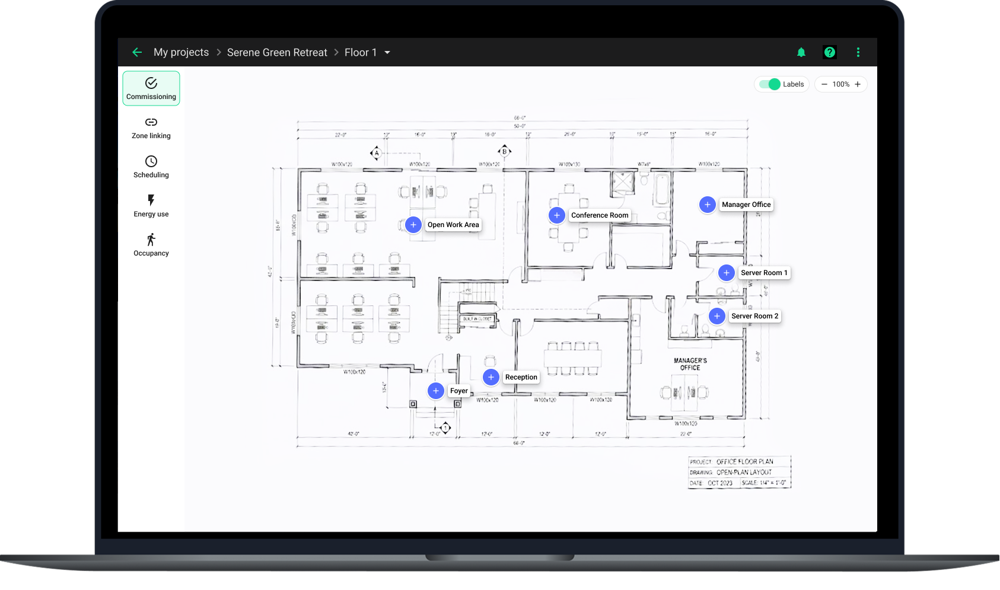
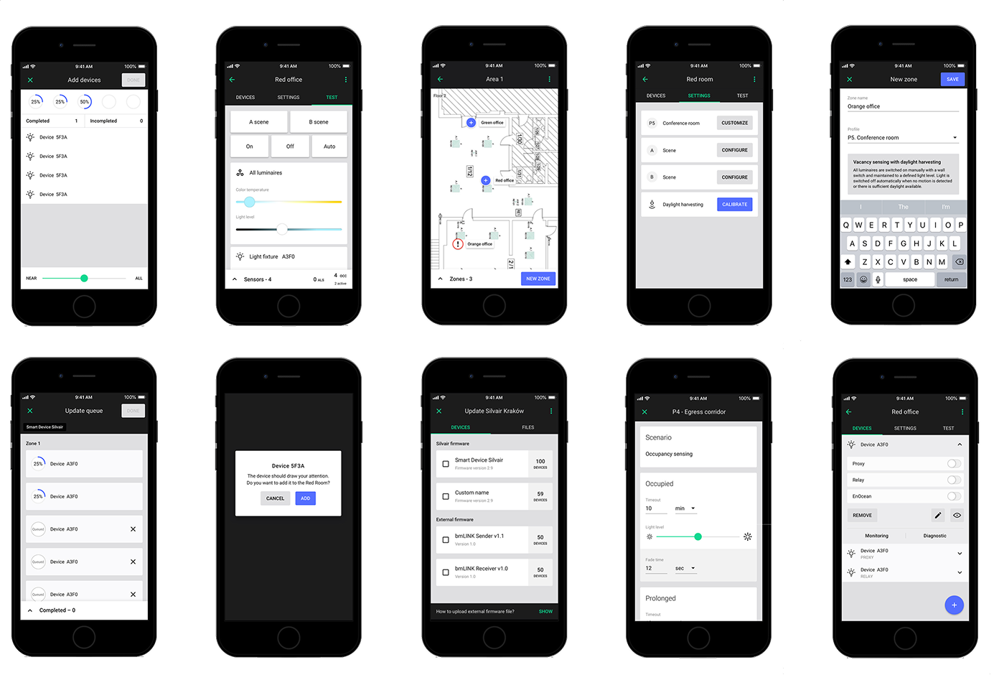
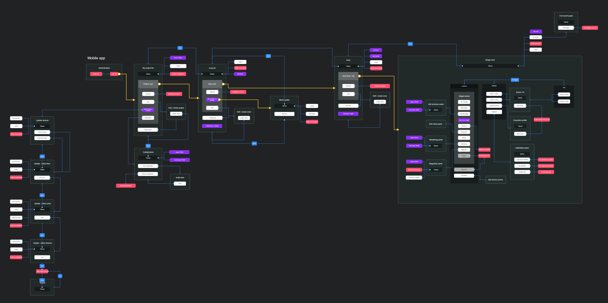
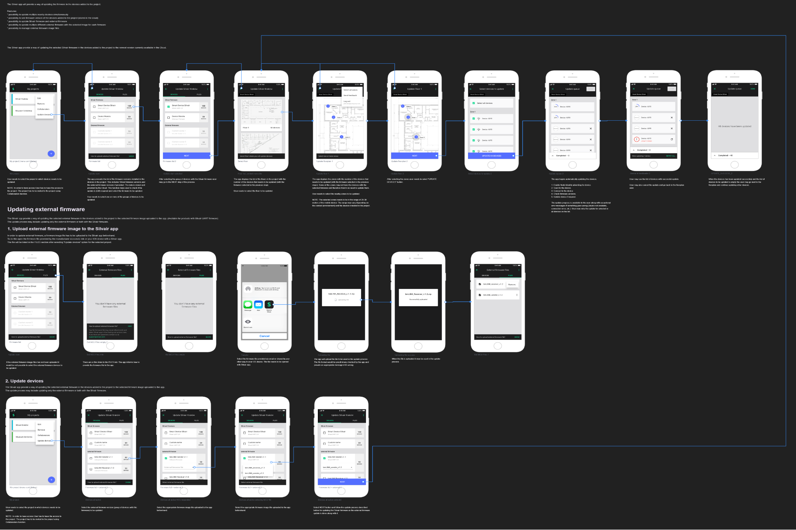

Lighting control platform for commercial spaces, built on the globally interoperable Bluetooth Mesh standard.
At Silvair, I designed the UX for a Bluetooth Mesh Platform that made complex connected-lighting systems easier to configure, manage, and deploy. I worked across the platform and its supporting tools, helping turn complex technical capabilities into practical workflows for lighting professionals. The platform was awarded the LFI Innovation Award 2019 and received more than 15 Bluetooth SIG recognitions, with solutions adopted by OSRAM, Sylvania, Zumtobel, and MaxLite.
The challenge was not only technical—it was informational. Connected lighting
systems involve many devices, rules, zones, and edge cases. I translated that
complexity into a calmer interface, using clear hierarchy, role-based flows,
and guided steps that reduce cognitive load while still giving experts the
power they need.
Traditional lighting projects can involve hundreds of devices, multiple zones,
control strategies, and project-specific requirements.
The platform needed to support this complexity without making the planning
process feel like a technical configuration tool.
Lighting designers, installers, and system integrators need to translate a physical space into a working digital system — defining areas, assigning fixtures, and configuring how the lighting should behave. I structured the planning experience around the way lighting projects are actually built — starting with the workspace and floor plan, then moving from spaces to zones, fixtures, and control strategies.

The mobile app enables seamless on-site commissioning by allowing users to scan for mesh-capable luminaires, sensors, and switches, which are automatically matched to their planned zones. Devices can be quickly added to the mesh using proximity-based lists, streamlining configuration. Daylight sensors can be calibrated, triggers tested, and installations validated in real time. Once deployed, users can compare real-world performance with initial plans, fine-tune parameters, and reassign devices as needed for optimal results.

The UX process began with concept sketches, early research, and collaborative workshops designed to align the team around user needs and business objectives. We facilitated structured design sessions where we explored early ideas and uncovered pain points.

Next, initial user flows and low-fidelity sketches were created to visualize how people would interact with the system across different scenarios. These early artifacts helped define key screens and navigation patterns, ensuring the overall structure supported intuitive and efficient workflows. At this stage, interactive prototypes were also prepared, followed by user testing to validate core assumptions and refine the experience.

During the handoff phase, detailed user flows, high-fidelity mockups, and comprehensive specifications were delivered to support development. Every interaction and screen state was thoroughly documented to ensure clarity and consistency. Close collaboration with the engineering team allowed for iterative feedback and refinement, helping bring the commissioning app to life with precision and confidence.